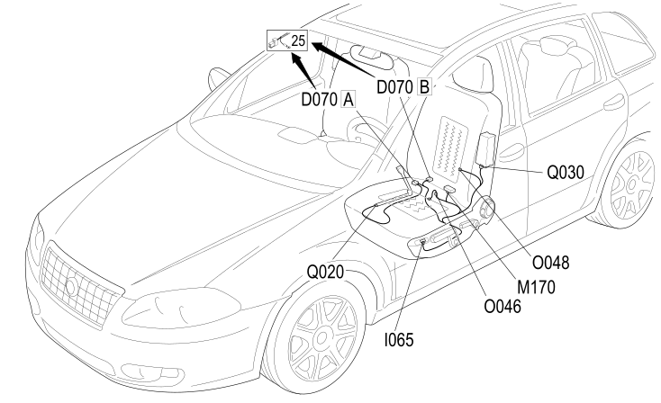

36 LEFT SEAT
- Path
- Electrical equipment > 2 WIRING > 36 LEFT SEAT
- Kind
- wiring harness
- Applies to
- all engines; all production periods; only with equipment: HEATED FRONT SEAT
- Interactive page
- https://sloeber94.github.io/elrnDB-fCrm/en/#/194001825
Applies to: all engines; all production periods; only with equipment: HEATED FRONT SEAT

Topics that link to this page (14)
- D070A DRIVER'S SEAT COUPLING (LEFT SEAT)
- D070B DRIVER'S SEAT COUPLING (LEFT SEAT)
- I065 DRIVER'S SEAT HEATING SWITCH (LEFT SEAT)
- M170 DRIVE SIDE FRONT PASSENGER SEAT HEATER CONTROL UNIT (LEFT SEAT)
- M173A DRIVE ALIGNMENT NODE (LEFT SEAT)
- M173B DRIVE ALIGNMENT NODE (LEFT SEAT)
- N125 LEFT FRONT SEAT REAR HEIGHT ADJUSTMENT MOTOR (LEFT SEAT)
- N126 LEFT FRONT SEAT FRONT HEIGHT ADJUSTMENT MOTOR (LEFT SEAT)
- N127 DRIVER'S SEAT SLIDING ADJUSTMENT MOTOR (LEFT SEAT)
- N132 DRIVER'S SEAT BACKREST ADJUSTMENT MOTOR (LEFT SEAT)
- O046 LEFT FRONT SEAT HEATER PAD WITH SENSOR (LEFT SEAT)
- O048 LEFT FRONT BACKREST HEATER PAD (LEFT SEAT)
- Q020 DRIVER'S SIDE FRONT BELT PRETENSIONER (LEFT SEAT)
- Q030 DRIVER'S SIDEBAG (LEFT SEAT)